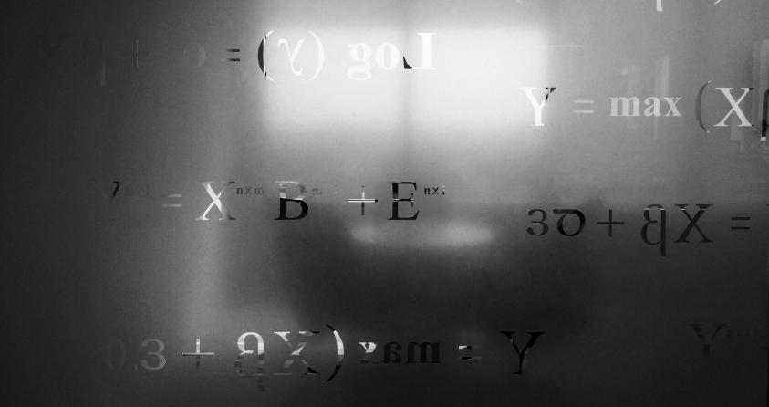

Operasi
Bilangan Riil

Bilangan riil atau bilangan real dalam matematika menyatakan bilangan yang bisa dituliskan dalam bentuk desimal, seperti 2,4871773339 atau 3,25678.
Bilangan real meliputi bilangan rasional, seperti 42 dan −23/129,
dan bilangan irasional, dan π. Bilangan riil juga dapat dilambangkan sebagai
salah satu titik dalam garis bilangan.
Definisi popular dari bilangan real meliputi klas ekuivalen dari deret Cauchy rasional,
irisan Dedekind dan deret Archimides. Bilangan riil ini berbeda dengan bilangan kompleks
yang termasuk di dalamnya adalah bilangan imajiner.


Created By
Kevin Yardan Fauzan
|
Fajar Muhammad Afrizal
|
Elizabeth Andrea Jamco
|
Copyright © 2022 Bilek